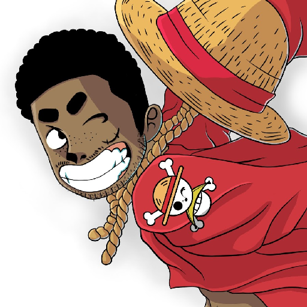
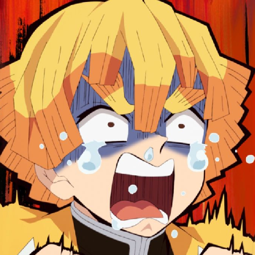
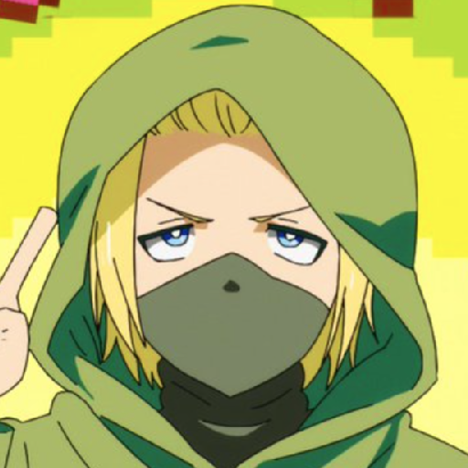

 Mickael (M.I.240) Je pense battre un ours à main nues - "Sans rigoler. Je pratique la MMA depuis maintenant 6 ans, de la boxe en parallèle depuis 7 ans, je pourrai. Ainsi que la musculation depuis 4 ans, 1m87 pour 86 kg. J'ai une vitesse de fou, et des réflèxes identique a ma vitesse. J'ai juste a l'attendre qui me charge l'esquivé et lui donné des bonnes patates dans la têtes. Je le lâcherai pas à la moindre erreur le gorille est finit. T'auras toujours des puceaux d'ici pour penser que c'est impossible."
 Loïc (Noctal) L'un des animateurs les plus confortables du PAF, il aime autant le saucisson que jouer à Smash ou Brawlhalla, bien qu'il soit meilleur pour couper du saucisson que jouer Fait ou Marth. Il aime bien la musique (Hamza > MJ pour lui... c'est honteux wllh). Vive la culture et vive le streaming......... Il joue avec le gyroscope !
 Tristan (Cubedurubik) Tristan est l'un des collaborateurs de BiBrain spécialisé dans le marketing et les finances. Grand amateur de jeux-vidéos et autres chinoiseries, sa grande connaissance du marché est devenue indispensable pour BiBrain... Il joue également avec le gyroscope.
Killian (Lommoez) "Je suis un peu mystérieux comme Light Yagami, je suis toujours tout seul, aux récrées je m’assoie sur un banc avec ma capuche et la tête baissé et quand quelque passe à coté de moi je chuchote des truc genre okamari no suzoki, ça ne veut rien dire mais ça fait mystique"